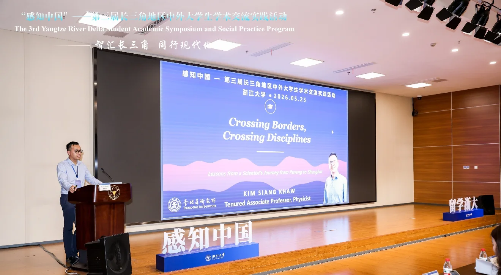
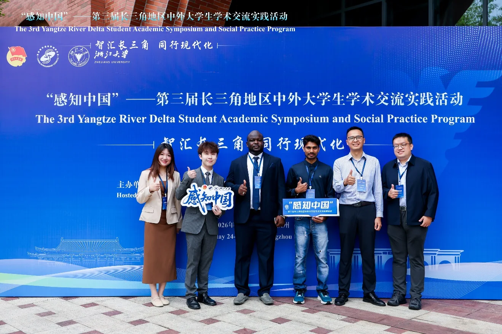

From 24 to 27 May 2026, Kim Siang Khaw took part in “Perceiving China” — the 3rd Academic Exchange and Practice Programme for Chinese and International University Students in the Yangtze River Delta (“感知中国”——第三届长三角地区中外大学生学术交流实践活动) in Hangzhou, Zhejiang. Hosted by the China Scholarship Council and co-organised by Zhejiang University under the theme “Smart Yangtze River Delta, Modernising Together” (智汇长三角·同行现代化), the event brought together about 150 Chinese and international students and scholars from 24 universities and 40 countries.
As an invited expert in the plenary session, Kim gave the talk “Crossing Borders, Crossing Disciplines”. Subtitled “Lessons from a Scientist’s Journey from Penang to Shanghai” and drawing on frontier science and his own research experience, he explained why crossing national and disciplinary boundaries matters in modern research, and encouraged young scholars to explore the unknown and build international and interdisciplinary collaborations. The talk was warmly received.


Kim joined as SJTU’s invited mentor, together with three of SJTU’s international students. PhD student Yasin Amara Sekou S Dra won a third prize for best presentation in a parallel session, and Sabir Rasheed and Sien Ping Chew presented posters. Beyond the academic sessions, participants from different cultural backgrounds explored historic lanes and the hills and lakes around Hangzhou, and visited Zhejiang University’s Future Learning Center to try out AI agents, agricultural robots and an AI creation workshop.


Read the full report from the SJTU Graduate School (in Chinese): 上海交大师生亮相第三届长三角中外大学生学术交流实践活动.
2026年5月24日至27日，许金祥赴浙江杭州参加由国家留学基金管理委员会主办、浙江大学承办的“感知中国”——第三届长三角地区中外大学生学术交流实践活动。本次活动以“智汇长三角·同行现代化”为主题，汇聚了来自长三角地区24所高校、40个国家的约150名中外师生。
许金祥作为特邀专家在大会专家报告环节作题为“Crossing Borders, Crossing Disciplines”（跨越国界，跨越学科）的报告。报告副标题为“Lessons from a Scientist’s Journey from Penang to Shanghai”（从槟城到上海：一位科学家的旅程）。他结合前沿科技与自身研究经历，阐述了跨越国界与学科边界对于现代科学研究的重要意义，鼓励青年学子勇于探索未知、加强国际与交叉合作。报告反响热烈。
许金祥作为上海交通大学特邀导师，与三名优秀国际学生共同参加了本次活动。博士研究生Yasin Amara Sekou S Dra在分论坛作学术报告并荣获最佳汇报三等奖，Sabir Rasheed与Sien Ping Chew以海报形式展示了研究成果。学术交流之外，交大师生随团开展了沉浸式社会实践，在千年古巷与青山秀水间结伴而行，并走入浙江大学未来学习中心，体验了AI智能体、智能农业机器人与AI创作工坊。
阅读上海交通大学研究生院完整报道：上海交大师生亮相第三届长三角中外大学生学术交流实践活动。